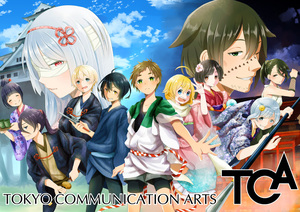

ゲームスクールコーナー http://www.tca.ac.jp/creative/
3年、4年制独自の産学連携教育システムにより、業界が求める即戦力としてのクリエイターを業界とともに育成しています。商品化を視野に入れた企業とのコラボ作品制作や現役クリエーターによる授業などを中心としたカリキュラムを実施し、業界へ数多くの卒業生を輩出しています。今年度の展示はVRやARなどを導入したゲームや企業とのコラボレーション作品を多数展示しております。